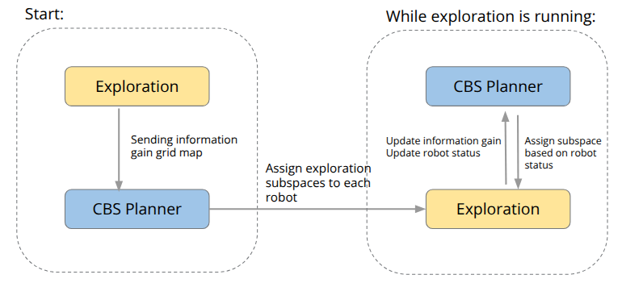

Heterogeneous Robot Exploration with CBS Task Allocation
Overview
This course project extends a ground-robot exploration framework to a heterogeneous UAV–UGV team.
We introduce a region-level Conflict-Based Search (CBS) allocator that dynamically reassigns subregions based on real-time information gain and robot status. Each robot plans globally with PRM–TSP to visit assigned regions efficiently and locally with A* for collision-free motion.
CMU 16891 Multi-robot Planning and Coordination - Course Project, Feb.–Apr. 2025
System at a Glance
- Shared global map + IG grid computed from each robot’s occupancy map.
- CBS task planner partitions the space into subregions and assigns them to robots with soft/hard constraints to avoid duplicate coverage.
- Per-robot planners: PRM–TSP for visiting sequence across assigned regions; A* for local paths.
- Dual-mode execution: robots explore independently; CBS triggers replans when regions finish or a robot stalls, enabling adaptive collaboration.
Pipeline
Exploration → IG grid → CBS Region Assignment → Per-robot PRM–TSP → Local A* → Map/Status update → (Re)plan as needed.

Methods
CBS Region Allocator
The CBS allocator divides the environment into fixed-size subregions and assigns them to robots based on global/local information gain, supporting soft/hard constraints for stalled or blocked areas.
It receives the IG grid from the exploration module, determines subregion assignments, and sends results back to each robot.
Planning Modules
- Global Planning (PRM–TSP) builds a roadmap and finds an optimal visiting sequence among assigned subregions.
- Local Planning (A*) generates collision-free motion within each subregion using the ESDF map; viewpoints are ranked by gain–cost ratio.
- Mapping merges each robot’s local occupancy grid into a global representation for shared decision-making.
Simulation Setup
We created a 40×40 m office-like Isaac Sim environment with walls, furniture, and narrow corridors to test UAV-only, UGV-only, and cooperative UAV–UGV exploration.
Regions that are only accessible to UAVs are highlighted for testing heterogeneous task division.
Results

Mapping Completeness & Efficiency
| Scenario | Path Length (m) | Exploration Time (s) | Mapping Completeness |
|---|---|---|---|
| UGV-only | 373.88 | 283.99 | Incomplete |
| UAV-only | 1003.88 | 895.99 | Complete |
| UAV–UGV (CBS) | 670.29 | 533.61 | Complete |
Takeaways
The collaborative CBS exploration achieves full coverage with ~33% shorter total path and ~40% lower total time compared to UAV-only runs, while avoiding redundant overlap via region exclusivity.
The UGV covers lower corridors and tight areas, while the UAV handles high or aerial-only subregions, achieving efficient complementary exploration.
My Contribution
- Extended the ground-robot exploration stack to a UAV–UGV framework in Isaac Sim.
- Implemented the CBS allocator with soft/hard constraints and IG-driven dynamic reassignment.
- Integrated the PRM–TSP global planner and A* local planner for each robot.
- Created simulated environments and visualized results for quantitative comparison.
Future work: deploy on real robots, extend to more agents, and integrate learning-based viewpoint sampling for adaptive frontier discovery.